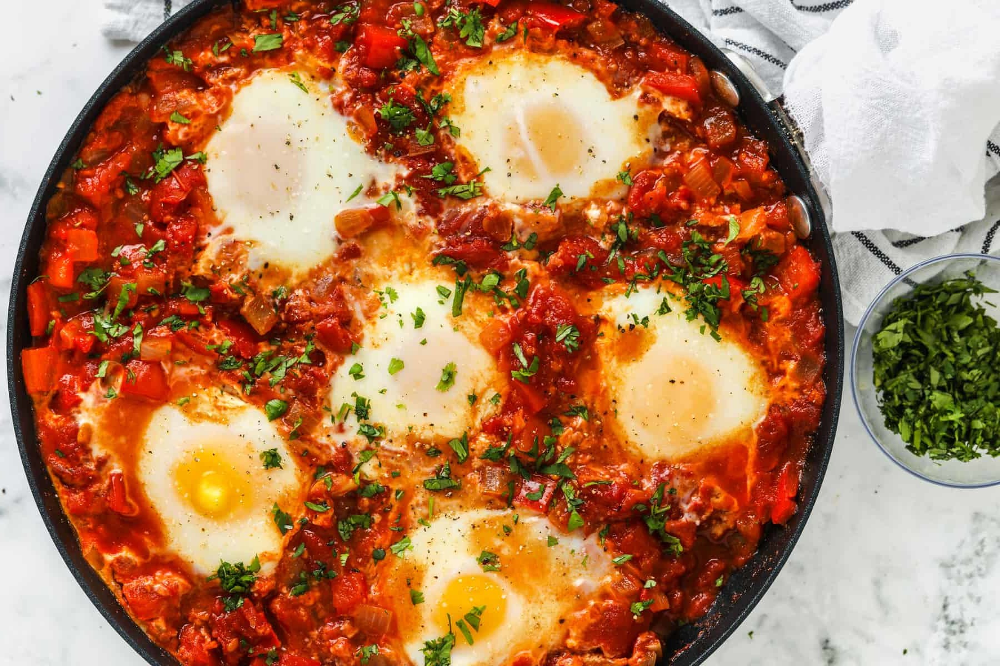

Shakshuka

Description
Shakshuka is a North African and Middle Eastern dish that is usually eaten for breakfast, but can be eaten for any meal of the day. It is made from onions, tomatoes, and a multitude of spices with eggs poached on top. This version uses tomato sauce with crumbled feta cheese on top to provide an extra tang. Though this dish is vegetarian, you can add meats such as ground beef or ground sausage if you prefer. Best served with warm crusty bread, this hearty dish is sure to satisfy.
Ingredients
- 1 red bell pepper, chopped
- 1 sweet onion, chopped
- 1 jar tomato sauce
- 150g feta cheese, crumbled
- 9 eggs
Seasonings
- 1 teaspoon sweet paprika
- 1/2 teaspoon cumin
- 1/4 teaspoon smoked paprika
- 2 teaspoons tomato paste
- 1 teaspoon salt
- 2 teaspoons sugar
- 1/4 teaspoon black pepper
Steps
- Preheat oven to 350°F
- In a large sauté pan, sauté the onions until translucent. Add bell peppers and sauté.
- Add the tomato sauce and all seasonings. Simmer the sauce until vegetables are soft, around 15 minutes. Adjust consistency to your liking by adding water.
- Add crumbled feta cheese to the pan. Make nine wells and break an egg into each well.
- Bake for 11 to 13 minutes, taking care not to overcook the eggs. Egg yolks should be runny.
- Serve with a nice crusty bread.
- Optional: You can add ground beef, chopped sausage, or crumbled sausage into the shakshuka. You can also serve with whole sausages on the side.